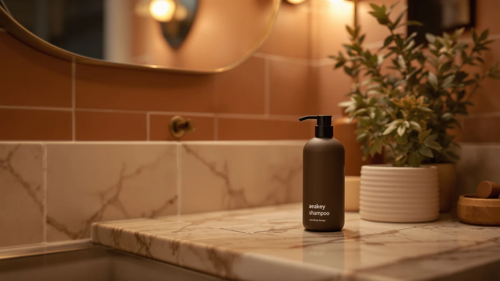

Quick Answer
This Aeakey shampoo review finds that for most households mounting a dispenser inside a single shower, the Aeakey wall-mounted 3-chamber shampoo and conditioner dispenser is the pick worth buying at $32.99. It packs 1200 ml across three 400 ml chambers into one ABS-plastic unit, and the manufacturer rates the pump for over 300,000 presses. If you'd rather use three separate refillable bottles instead of one fixed unit, the LUSSPA set below covers the same three-product routine for about 27 cents more.
Our pick: Shampoo and Conditioner Dispenser -, $32.99 Check Price on Amazon
Things to Know Before You Buy
- This Aeakey shampoo dispenser review is built on the manufacturer's spec sheet and current Amazon pricing, not hands-on use, since we're a research-based comparison site.
- The Aeakey holds 1200 ml total across three 400 ml chambers, each with a viewing window so you can see remaining liquid without unmounting anything.
- The housing is ABS plastic, and the manufacturer rates the pump for more than 300,000 presses, or roughly a decade of daily use.
- At $32.99, it costs close to the same as the three-bottle LUSSPA set below, but it consolidates everything into one mounted unit instead of three separate bottles.
- None of the four dispensers compared in this guide carry a public star rating on Amazon yet, so we weighed them on disclosed specs and build details rather than review history.
This Aeakey shampoo review compares the wall-mounted 3-chamber dispenser against three other wall-mount and countertop options on capacity, materials and price, using the manufacturer's spec sheet and current Amazon listings rather than any hands-on use we didn't perform. Shower caddies and loose bottles work fine until a small bathroom runs out of shelf space, and a fixed dispenser is the usual fix once that happens.
Our pick for most people mounting a single shower is the Aeakey, at $32.99 for a 1200 ml unit split into three 400 ml chambers. The LUSSPA three-bottle set below is a close alternative if you'd rather swap and refill individual bottles instead of one fixed housing. If you're also weighing a sensor-driven pump for the sink instead of a press dispenser for the shower, our separate look at automatic versus manual soap dispensers covers that tradeoff.
Why You Should Trust Us
Ilane Tall covers bathroom and home products for Best Soap Dispensers, and this Aeakey shampoo dispenser review follows the same process as every guide on this site: pull the manufacturer's spec sheet, record the price at the time of publishing, and check it against comparable wall-mount and countertop dispensers already on the market. We don't buy, install or live with these products, and we say so plainly instead of implying a testing lab that doesn't exist.
Our Research Experience
For this Aeakey shampoo review, we pulled the listed capacity, chamber count, housing material and press-count rating directly from the manufacturer's spec sheet, then cross-checked those figures against the three comparison dispensers below using the same source type. We also tracked Amazon's listed price for each unit on the date noted in this guide and excluded any wall-mount dispenser whose listing didn't disclose basic capacity or material details, since those gaps make an honest comparison impossible.
Overview & Specs
The table below breaks down what this Aeakey shampoo review found on the spec sheet for the dispenser itself before we get into likes, drawbacks and alternatives.

Shampoo and Conditioner Dispenser -
What we like
- 1200 ml of total capacity split across three 400 ml chambers, each with a viewing window
- ABS housing the manufacturer rates for more than 300,000 presses before the pump wears out
- Oversized buttons the listing says dispense a full amount in one press, including thicker conditioner
- Removable, refillable bottles you can take down for cleaning and refilling
Flaws but not dealbreakers
- No published star rating or review history yet to confirm those press-count claims hold up over years of daily use
- The listing doesn't detail mounting hardware or drilling requirements, so measure your shower wall and check compatibility before buying
- Three fixed 400 ml chambers mean you can't resize one compartment if you go through shampoo much faster than conditioner
| Material | ABS plastic |
| Size | 1200 ml |
This Aeakey shampoo and conditioner dispenser mounts to a shower wall and splits its 1200 ml total capacity into three 400 ml chambers, one each for shampoo, conditioner, and body wash. The housing is ABS plastic, which the manufacturer markets as waterproof and wear-resistant, and each chamber has a window so you can see the remaining liquid without taking anything apart. The pump itself is rated by the manufacturer for more than 300,000 presses, which the listing translates to roughly a decade of typical daily use for one household.
At $32.99, the Aeakey costs about 27 cents less than the three-bottle LUSSPA set compared later in this guide, and it trades the flexibility of separate bottles for a single unit you mount once. That tradeoff favors the Aeakey if you want one consistent setup and don't plan to relabel or swap bottles often, while the LUSSPA is the better fit if you'd rather manage shampoo, conditioner, and body wash as three independent refillable containers.
The listing markets this specific version in a black three-pack finish and calls out both bathroom and hotel use, which lines up with the fixed three-chamber design: a property or household running the same shampoo, conditioner, and body wash routine day after day gets more out of a sealed, no-relabeling setup than someone who switches products seasonally. At 400 ml per chamber, how long a household goes between refills depends heavily on hair length and how much body wash each person uses, so treat any refill-interval estimate as a rough guide rather than a fixed number.
What We Liked
What stands out most in this Aeakey shampoo review is how much capacity the dispenser packs into one mounted unit. At 1200 ml across three chambers, it holds enough shampoo, conditioner, and body wash to go weeks between refills in most single-shower households, and the viewing window on each chamber means you're not guessing when it's time to top one off. The manufacturer's 300,000-press pump rating also suggests the mechanism is built to outlast a typical renovation cycle instead of a single season of use.
We also like that the bottles are removable for cleaning, which matters more than it sounds for a dispenser that holds conditioner, since residue builds up in fixed chambers that can't be taken apart. The oversized buttons the listing describes should help with thicker liquids specifically, where a smaller nozzle on cheaper dispensers tends to clog or under-dispense. Labeling each chamber by position also cuts down on the guessing game that loose bottles create once labels peel off in a steamy shower.
What Could Be Better
The biggest gap in this Aeakey shampoo dispenser review is the lack of a public rating or review history. That's not a mark against the product itself, since a missing rating means unverified rather than poor, but it does mean the 300,000-press claim and the "up to 10 years" framing come from the manufacturer alone, with no outside verification yet.
The listing is also light on installation detail. It doesn't specify whether the mount is adhesive, drilled, or some combination, so you'll want to confirm wall compatibility before ordering rather than assuming it matches the no-drill approach some competitors use. And because the three chambers are a fixed 400 ml each, anyone who burns through shampoo at a different rate than conditioner will eventually refill one chamber more often than the others. None of that is unusual for a fixed multi-chamber dispenser, but it's worth knowing before you commit to one mounted unit over a shelf of swappable bottles.
Who Is It For?
This Aeakey shampoo and conditioner dispenser fits a single household shower that wants shampoo, conditioner, and body wash consolidated into one mounted fixture instead of a shelf of bottles. It's a reasonable match for a primary bathroom where the same few products get refilled on a predictable schedule. If you share a bathroom with people who use noticeably different amounts of each liquid, or you want the option to swap bottles out individually, the LUSSPA three-bottle alternative below is worth comparing before you commit. For a broader sense of where a dispenser like this fits against other shower setups, see our picks for soap dispensers built for shower use.
Alternatives to Consider
If the Aeakey doesn't fit your bathroom or budget, these three alternatives cover a refillable bottle set, a commercial-style single dispenser, and a cheaper countertop option worth weighing before you buy a shampoo dispenser for your shower. Each one targets a different priority: flexibility, high-traffic durability, or upfront price, so match the pick to what matters most in your bathroom rather than defaulting to the cheapest option.

Premium Choice
Shower Shampoo Dispenser Wall Mounted
Three refillable 16.9 oz PET bottles with stainless steel pumps and no-drill adhesive mounts, for about 27 cents more than the Aeakey, if you'd rather manage separate bottles than one fixed 3-chamber unit.
$33.26
Check Price on Amazon
Also Great
VANNSOO Commercial Soap Dispenser Wall
A single vertical stainless steel dispenser with a corrosion-resistant lining and roughly 1100 ml of capacity, built for one liquid at a time rather than the Aeakey's three-chamber shampoo and conditioner split.
$31.88
Check Price on Amazon
Best Value
Modern Kitchen Soap Dispenser Set
An amber glass dispenser duo with a wood tray, better suited to a kitchen or vanity countertop than a shower wall, but the cheapest of the four options at $30.99.
$30.99
Check Price on AmazonFrequently Asked Questions
How much shampoo and conditioner does the Aeakey dispenser hold?
The Aeakey holds 1200 ml total, split across three 400 ml chambers, each with a viewing window so you can see when a chamber is running low.
What is the Aeakey shampoo dispenser made of?
The housing is ABS plastic, and the manufacturer rates the pump for more than 300,000 presses, which works out to roughly a decade of typical daily use.
Is the Aeakey shampoo and conditioner dispenser worth it compared to other wall-mount options?
At $32.99 for an integrated 3-chamber, 1200 ml unit, this Aeakey shampoo review found it costs about the same as the LUSSPA three-bottle set while consolidating shampoo, conditioner, and body wash into one mounted piece. For other wall-mount and countertop formats, see our shower dispenser picks.
Final Verdict
This Aeakey shampoo review points to the Aeakey wall-mounted 3-chamber dispenser as the pick worth buying for most single-shower households, at $32.99 for 1200 ml of total capacity and a pump rated for more than 300,000 presses. The LUSSPA three-bottle set is the better choice if you'd rather manage shampoo, conditioner, and body wash as separate refillable containers, and the VANNSOO and RYTOXILO alternatives above are worth a look if your priority is a single-liquid commercial dispenser or a cheaper countertop set instead of a shower wall mount. For most people replacing loose bottles on a shower shelf, though, the Aeakey remains the straightforward choice, and its price sits close enough to every alternative here that the decision mostly comes down to format rather than cost.